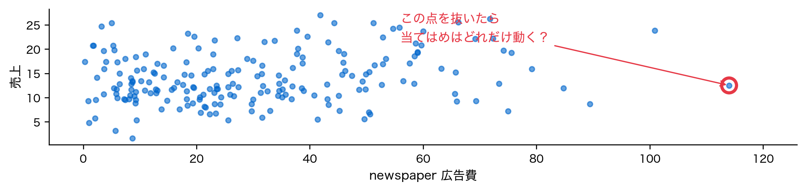
第4回 罰則付き最小二乗法
係数の大きさに罰を足し、罰の強さを交差検証で選ぶ
第I部 理論
前回の問い
- 係数の不安定性は \operatorname{Var}(\hat{\boldsymbol\beta})=\sigma^2(\mathbf X^\top\mathbf X)^{-1} で決まる
- 列が似ていると、係数が不安定になる
- 列が重なると、逆行列が無く、係数は1つに決まらない
係数が非常に不安定になる、あるいは1つに決まらないとき、どうするか？
場面①：前立腺がんの8本の係数
97人の患者で、PSAの値の対数を8つの測定値から予測する。全員で当てはめた係数（標準化した列）。
場面②：取り直すと揺れる
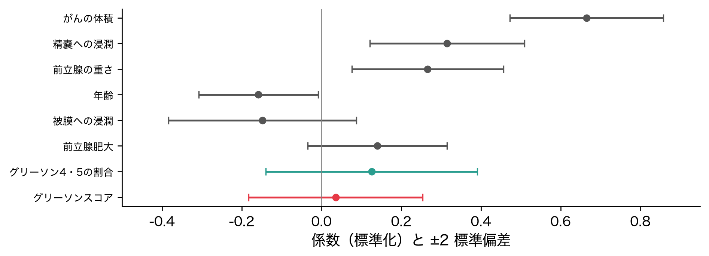
97人から97人を復元抽出して当てはめ直す（ブートストラップ）を1000回。8本のうち 4 本は、±2標準偏差の幅が0をまたぐ。
場面③：似た2列の雲

グリーソンスコアと4・5の割合（どちらも悪性度）。1000回の係数を点で打つと、右下がりの雲になる。
場面④：内訳が決まらない
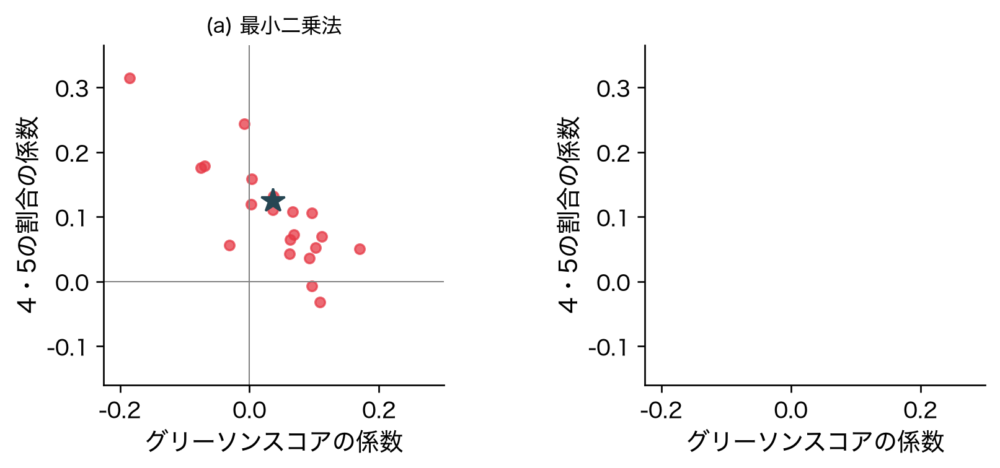
片方が大きい回は、もう片方が小さい。和は決まるが、内訳はほとんど決まらない。
今回の問い
揺れる係数の候補から、どの1つを選ぶか？
今回覚える言葉
- 罰則付き最小二乗法（リッジ回帰・ラッソ）
- 偏りと揺れの釣り合い
- 有効自由度
- 訓練・検証・テストの3分割
- 交差検証（クロスバリデーション、CV）、k-fold CV
位置づけ：推定法が変わる
| 第3回 | 第4回（今回） | |
|---|---|---|
| モデル | 線形回帰 | 線形回帰（そのまま） |
| 推定法 | 最小二乗法 \lVert\boldsymbol y-\mathbf X\boldsymbol\beta\rVert_2^2 | 罰則付き最小二乗法 \lVert\boldsymbol y-\mathbf X\boldsymbol\beta\rVert_2^2+\lambda\times\text{罰} |
| 係数 | 偏りは無いが揺れる | 偏るが揺れにくい |
「モデル × 推定法」の地図で、推定法の列が初めて増える。
言葉を決める
- 当てはまりの良さだけでは、候補が1つに決まらない
- 当てはまりのほかに、選ぶ基準を足す：ほかが同じなら、係数は小さいほうがよい
- そのために、係数ベクトルの大きさを測る道具と、逆行列があるかを確かめる道具が要る
道具を先にそろえる。
道具①：係数の大きさ（ℓ2）
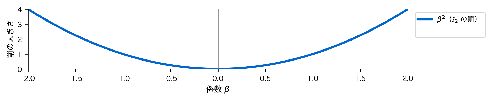
\lVert\boldsymbol\beta\rVert_2^2=\sum_{j=1}^{p}\beta_j^2
\ell_2 ノルムの二乗。\beta^2 は原点の近くで平ら。
道具①：もう1つの大きさ（ℓ1）
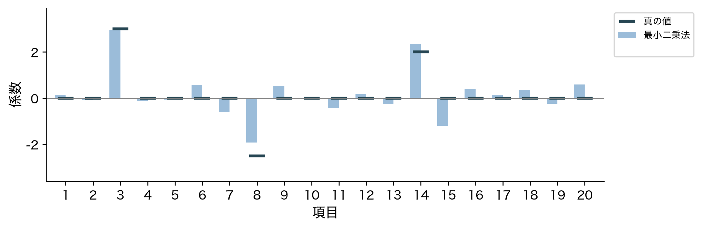
\lVert\boldsymbol\beta\rVert_1=\sum_{j=1}^{p}|\beta_j|
絶対値の和（\ell_1 ノルム）。|\beta| は0で尖る。
道具②：正定値
\boldsymbol v^\top\mathbf A\,\boldsymbol v>0\qquad(\text{0でないすべての }\boldsymbol v)
対称行列 \mathbf A がこれを満たすとき、正定値という。どの向きに動いても正の値になる。
道具②：正定値なら逆行列がある
\begin{aligned} &\mathbf A\boldsymbol v=\boldsymbol 0\ \text{となる}\ \boldsymbol v\ne\boldsymbol 0\ \text{があれば}\quad \boldsymbol v^\top\mathbf A\boldsymbol v=0 \\ \Longrightarrow\quad&\text{正定値なら、そんな}\ \boldsymbol v\ \text{は無い} \quad\Longrightarrow\quad \mathbf A^{-1}\text{ がある} \end{aligned}
第3回で逆行列が無かったのは、\mathbf X^\top\mathbf X\boldsymbol v=\boldsymbol 0 となる向き（谷底の線の向き）があったから。
道具③：トレース
\operatorname{tr}\mathbf A=\sum_{j}a_{jj},\qquad \operatorname{tr}(\mathbf A\mathbf B)=\operatorname{tr}(\mathbf B\mathbf A)
正方行列の対角の和。掛ける順を回してよい（\mathbf A が n\times p、\mathbf B が p\times n なら、左は n\times n、右は p\times p のトレース）。
道具がそろった
- 係数の大きさは、\ell_2 ノルムの二乗か \ell_1 ノルムで測る
- 正定値な行列には、逆行列がある
- トレースは、掛ける順を回してよい
まず二乗の罰を、係数1つの回帰に足してみる。
係数1つの目的関数

人工データ：ラーメン20杯の辛さ x と、飲んだ水の量 y（どちらも、いつもからのずれ）。第1回の放物線。点が谷底。
罰を足す
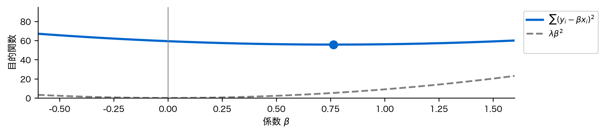
f_\lambda(\beta)=\sum_{i=1}^{n}(y_i-\beta x_i)^2+\lambda\beta^2\qquad(\lambda\ge0)
0で最小になる放物線 \lambda\beta^2（灰）を足す。\lambda が罰の強さ。
谷底が0へ寄る
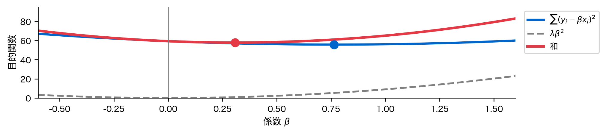
和（赤）の谷底は、最小二乗の谷底（青の点）より0に近い。
スカラーで解く
\begin{aligned} &\frac{df_\lambda}{d\beta}=-2\sum_{i=1}^{n}x_i(y_i-\beta x_i)+2\lambda\beta=0 \\ \Longrightarrow\quad&\hat\beta_\lambda=\frac{\sum_i x_iy_i}{\sum_i x_i^2+\lambda} \end{aligned}
分母に \lambda が足されるだけ。\lambda=0 なら第1回の (5)式。
ベクトルで書く
f_\lambda(\beta)=\lVert\boldsymbol y-\beta\boldsymbol x\rVert_2^2+\lambda\beta^2 \quad\Longrightarrow\quad \hat\beta_\lambda=\frac{\boldsymbol x^\top\boldsymbol y}{\boldsymbol x^\top\boldsymbol x+\lambda}
n 杯ぶんを縦に並べたベクトルで。成分で書けば、スカラーの式に戻る。
行列で書く
f_\lambda(\boldsymbol\beta)=\lVert\boldsymbol y-\mathbf X\boldsymbol\beta\rVert_2^2+\lambda\lVert\boldsymbol\beta\rVert_2^2
係数が p 個。罰は道具①の \ell_2 ノルムの二乗 \boldsymbol\beta^\top\boldsymbol\beta。
勾配を0とおく
\begin{aligned} \frac{\partial f_\lambda}{\partial\boldsymbol\beta}&=-2\mathbf X^\top(\boldsymbol y-\mathbf X\boldsymbol\beta)+2\lambda\boldsymbol\beta=\boldsymbol 0\\ &\Longrightarrow\quad (\mathbf X^\top\mathbf X+\lambda\mathbf I)\,\hat{\boldsymbol\beta}_\lambda=\mathbf X^\top\boldsymbol y \end{aligned}
第1回の正規方程式の対角に \lambda が足される。p=1 ならスカラーの式。
切片は罰さない
- 切片も罰すると、y を平行に動かしただけで係数まで変わる
- 列と \boldsymbol y を平均0に中心化すれば、切片は \bar y に切り離せる（第3回）
- 以下、\mathbf X と \boldsymbol y は中心化してあるものとする
名前：リッジ回帰
- 罰則付き最小二乗法：最小二乗法の目的関数に、係数の大きさへの罰を足す
- 正則化：罰で係数を小さく抑えること
- リッジ回帰：罰が \ell_2 ノルムの二乗のもの
逆行列は必ずある
\begin{aligned} \boldsymbol v^\top(\mathbf X^\top\mathbf X+\lambda\mathbf I)\,\boldsymbol v &=\lVert\mathbf X\boldsymbol v\rVert_2^2+\lambda\lVert\boldsymbol v\rVert_2^2>0 \\ &\qquad(\boldsymbol v\ne\boldsymbol 0,\ \lambda>0) \end{aligned}
第1項は0以上、第2項は正。道具②より、列が重なっても、p>n でも逆行列がある。
谷底が線のとき

人工データ：同じ麺の量を2台の秤で量った2列（相関1）。罰が無いと、底は直線 \beta_1+\beta_2=2 の全体。
谷底が1点に決まる

罰を足すと、線の上で \lVert\boldsymbol\beta\rVert_2^2 が最も小さい1点（\beta_1=\beta_2）に決まる。効き目を等しく分ける。
次の問い：罰で何を失うか
- 罰を足すと、逆行列は必ずあり、答えは1つに決まる
- ただし答えは、最小二乗の解から0の側へ寄せられた
寄せたことで、係数は何を得て、何を失うのか？
取り直すと扇が開く
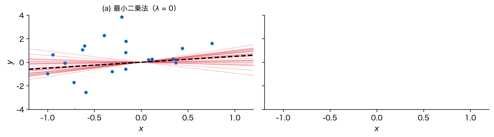
同じ20杯の辛さのまま、水の量 y を30回取り直して引いた直線（赤）。黒の破線が真の直線。扇が大きく開く。
罰を足すと扇が閉じる
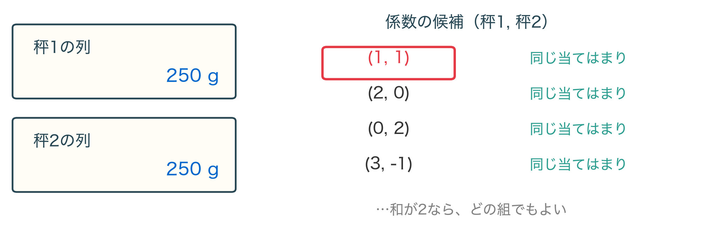
扇は閉じる。だが直線はそろって、真の直線より寝ている。
スカラー：平均も揺れも縮む
\begin{aligned} &\mathbb E[\hat\beta_\lambda]=\kappa\beta,\qquad \operatorname{Var}(\hat\beta_\lambda)=\kappa^2\,\frac{\sigma^2}{\sum_i x_i^2}, \\ &\kappa=\frac{\sum_i x_i^2}{\sum_i x_i^2+\lambda}\ (0<\kappa\le1) \end{aligned}
平均も標準偏差も \kappa 倍。平均が縮むぶん、偏り (1-\kappa)\beta が入る。
偏りの二乗と揺れ
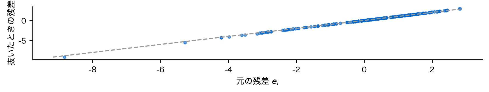
係数の二乗誤差を2つに分ける。\lambda を大きくすると、Bias² (1-\kappa)^2\beta^2 は増え、Variance \kappa^2\sigma^2/\textstyle\sum_ix_i^2 は減る。
和はU字

\mathbb E[(\hat\beta_\lambda-\beta)^2] = Bias² ＋ Variance。第2回と同じ形のU字。底では最小二乗法（\lambda=0）より小さい。
底の位置はわからない
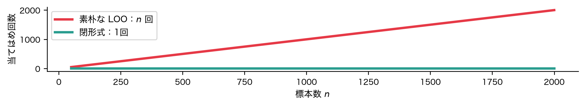
底は \lambda=\sigma^2/\beta^2。真の \beta と \sigma^2 を知らないと決まらない。
行列：細長い雲
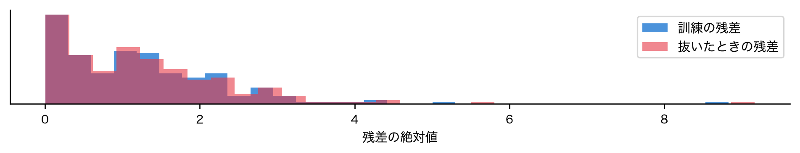
人工データ：麺とスープの量（相関0.92）から満腹度を予測。\boldsymbol y を300回取り直した係数。★が真の値。
リッジで雲が縮む
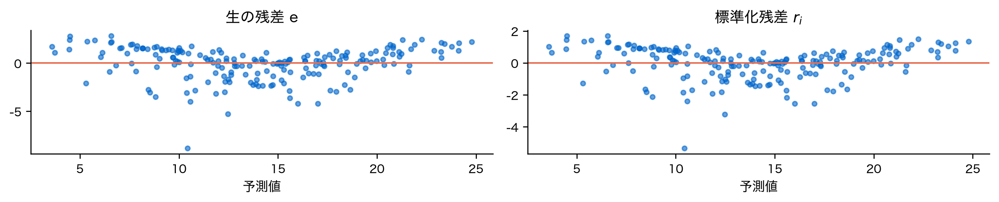
細長い向き（内訳の向き）が大きく縮む。和の向きはほとんど縮まない。
中心は2つを近づける側へ
\begin{aligned} \mathbb E[\hat{\boldsymbol\beta}_\lambda]&=(\mathbf X^\top\mathbf X+\lambda\mathbf I)^{-1}\mathbf X^\top\mathbf X\,\boldsymbol\beta\\ \operatorname{Var}(\hat{\boldsymbol\beta}_\lambda)&=\sigma^2(\mathbf X^\top\mathbf X+\lambda\mathbf I)^{-1}\mathbf X^\top\mathbf X(\mathbf X^\top\mathbf X+\lambda\mathbf I)^{-1} \end{aligned}
\lambda=0 なら第3回の式。雲の中心は★からずれ、2つの係数を近づける側へ偏る。
次の問い：ちょうど0にできるか
- リッジ回帰は係数を縮めるが、0にはしない
- 効かない列は、係数をちょうど0にして外したい
罰の形を、二乗から絶対値に変えるとどうなるか？
絶対値の罰
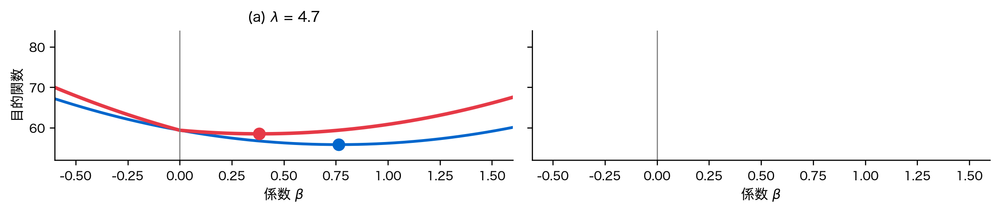
g_\lambda(\beta)=\sum_{i}(y_i-\beta x_i)^2+\lambda|\beta|。同じラーメンのデータで、罰を絶対値にかえる（ラッソ）。
\lambda が小さいうちは、谷底（赤）は少し0へ寄るだけ。
尖りに引っかかる
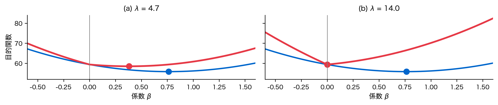
\lambda を大きくすると、谷底が \beta=0 の尖りに止まる。係数はちょうど0。
場合分けで解く
c=\sum_ix_iy_i、S=\sum_ix_i^2 とおき、\beta>0 と \beta<0 で別々に微分する。
\hat\beta^{\,\mathrm{L}}_\lambda= \begin{cases} (c-\lambda/2)/S & (c>\lambda/2)\\ 0 & (|c|\le\lambda/2)\\ (c+\lambda/2)/S & (c<-\lambda/2) \end{cases}
どちらの側にも谷底が無ければ、尖りの \beta=0 が最小。
リッジは比で縮める
最小二乗の推定値 c/S に対して、リッジ回帰は S/(S+\lambda) を掛ける。比で縮めるので、0にはならない。

ラッソは差で縮める
ラッソは |c/S| から \lambda/(2S) を引く。差で縮め、引ききれない小さな推定値をちょうど0にする（軟しきい値）。

行列では：1列ずつくり返す
\min_{\boldsymbol\beta}\ \lVert\boldsymbol y-\mathbf X\boldsymbol\beta\rVert_2^2+\lambda\lVert\boldsymbol\beta\rVert_1
- 残差 \boldsymbol r=\boldsymbol y-\mathbf X\boldsymbol\beta に、列 j の分を足し戻す：\boldsymbol r_j=\boldsymbol r+\boldsymbol x_j\beta_j
- 1変数の式で更新：\beta_j\leftarrow 場合分けの式（c=\boldsymbol x_j^\top\boldsymbol r_j、S=\lVert\boldsymbol x_j\rVert_2^2）
- j=1,\dots,p を、係数が動かなくなるまでくり返す（座標降下法。閉じた式は無い）
罰を動かして係数を並べる
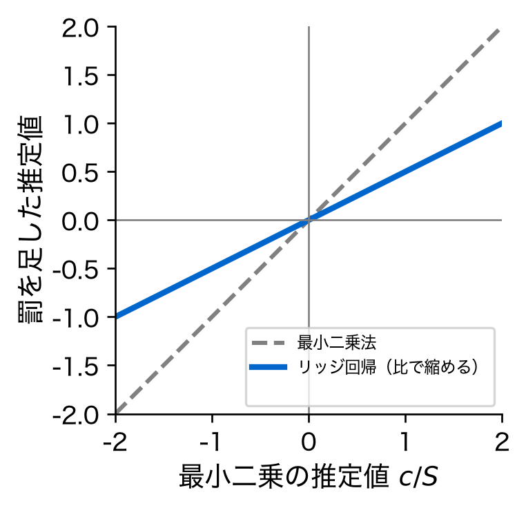
人工データ：麺とスープの60杯。右端の1が最小二乗法、左の0は全係数が0。リッジでは2本が近づきながら0へ縮む。
ラッソの道筋
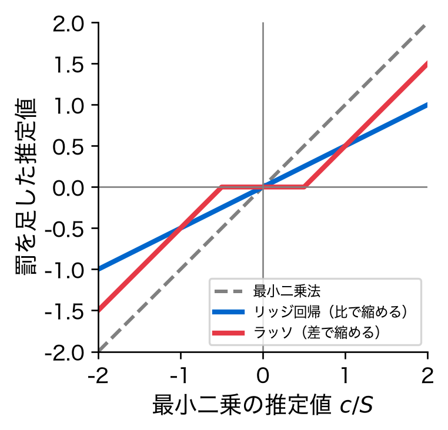
同じ軸で。ラッソでは、スープの係数が先にちょうど0になり、麺の1本だけが残る区間がある。
次の問い：同じλで罰してよいか
- 罰は、係数の大きさを列をまたいで足し合わせる
- ところが係数の大きさは、列の目盛りの取り方で変わる
1つの \lambda で、すべての列を同じように罰してよいか？
目盛りを変えると罰が変わる
\begin{aligned} &x_j\ (\text{g})\ \to\ x_j/1000\ (\text{kg}) \\ \Longrightarrow\quad&\beta_jx_j\ \text{は同じ},\quad \beta_j\to1000\,\beta_j,\quad \beta_j^2\to10^6\,\beta_j^2 \end{aligned}
ラーメンの麺の量をkgで測ると、予測は同じなのに罰だけが100万倍。値の大きな目盛りの列ほど、罰を免れる。
標準化してから罰する
\mathbf Z=(\mathbf X-\mathbf 1\bar{\boldsymbol x}^\top)\,\mathbf D^{-1},\qquad \mathbf D=\operatorname{diag}(s_1,\dots,s_p)
- 第2回の標準化。全列の標準偏差を1にそろえれば、1つの \lambda が全列に同じ意味を持つ
- 平均・標準偏差は訓練の行だけで求める（第2回のデータリーク）
次の問い：λ＝10は強いか
- \lambda の値だけでは、罰が強いか弱いかを読めない
- 効き具合は \mathbf X^\top\mathbf X の大きさしだい
罰の効き具合を、「使った係数の数」に換算できないか？
予測値もyの線形変換
\hat{\boldsymbol y}_\lambda=\mathbf X\hat{\boldsymbol\beta}_\lambda =\underbrace{\mathbf X(\mathbf X^\top\mathbf X+\lambda\mathbf I)^{-1}\mathbf X^\top}_{\mathbf H_\lambda}\boldsymbol y
\lambda=0 なら第3回の射影行列 \mathbf H。\mathbf H_\lambda も \mathbf X と \lambda だけで決まる。
λ＝0：tr H ＝ p
\begin{aligned} \operatorname{tr}\mathbf H &=\operatorname{tr}\bigl(\mathbf X(\mathbf X^\top\mathbf X)^{-1}\mathbf X^\top\bigr) \\ &=\operatorname{tr}\bigl((\mathbf X^\top\mathbf X)^{-1}\mathbf X^\top\mathbf X\bigr) =\operatorname{tr}\mathbf I_p=p \end{aligned}
道具③で順を回す。てこ比の和は列の数。
残差の自由度はn − p
\mathbb E[\mathrm{RSS}] =\mathbb E\bigl[\boldsymbol\varepsilon^\top(\mathbf I-\mathbf H)\boldsymbol\varepsilon\bigr] =\sigma^2\operatorname{tr}(\mathbf I_n-\mathbf H) =\sigma^2(n-p)
だから \hat\sigma^2 は n-p で割る（第3回の約束）。p 個の係数が、自由度を p 使う。
定義：有効自由度
\begin{aligned} &\operatorname{tr}\mathbf H_\lambda=\operatorname{tr}\bigl((\mathbf X^\top\mathbf X+\lambda\mathbf I)^{-1}\mathbf X^\top\mathbf X\bigr) \\ \xrightarrow{\ p=1\ }\quad&\frac{\sum_ix_i^2}{\sum_ix_i^2+\lambda}=\kappa \end{aligned}
\lambda=0 で p。p=1 なら縮みの率 \kappa そのもの。
pから0へ下がる
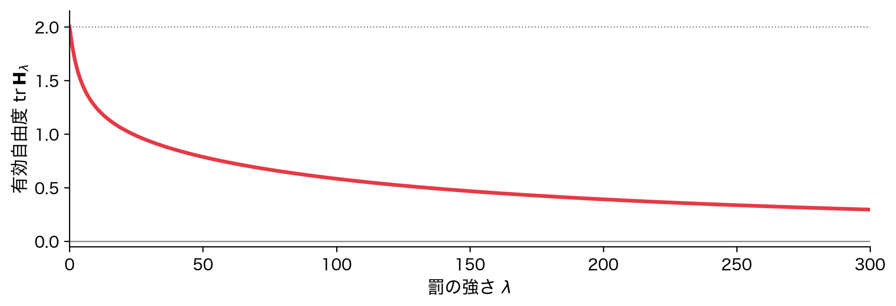
人工データ：麺とスープの2列。\lambda=0 で2、罰を強めると0へ。雲の図の \lambda = 5 は、係数 1.45 個ぶん。
最後の問い：λをどう選ぶか
- 係数の二乗誤差の底は \lambda=\sigma^2/\beta^2。真の値を知らないと決まらない
- 手元のデータから選ぶしかない
手元のデータだけで、罰の強さをどう選ぶか？
訓練誤差では選べない
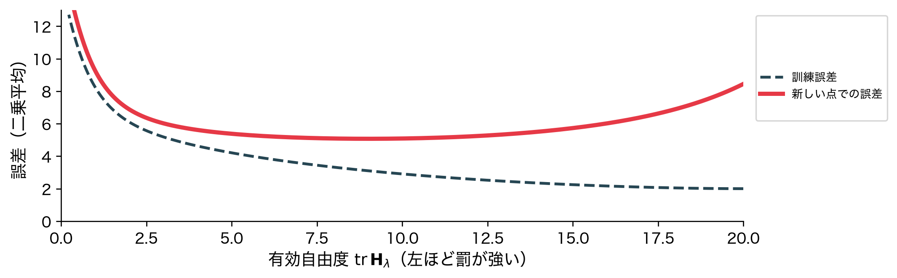
人工データ：40行・20列。訓練誤差（破線）は罰を弱めるほど下がる一方（\lambda=0 が最小）。新しい点での誤差（赤）はU字。
U字の中身
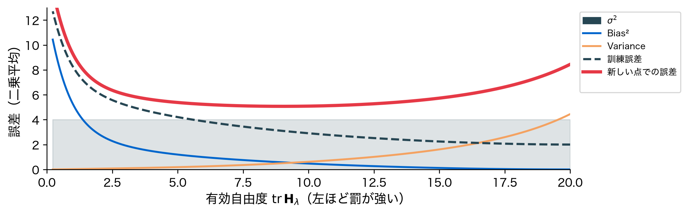
第2回と同じBias² ＋ Variance ＋ σ²。有効自由度が、複雑さのつまみになる。
テストの行で選ぶと上振れする
- \lambda の候補を10個、テストの行で比べて最良を選ぶ
- 報告される誤差は、10個の測定値の最小値。偶然良く出たぶんだけ良く見える
- 選ぶことも学習の一種。選ぶのに使った行は、もう観測されていない値の代役ではない
3分割：訓練・検証・テスト
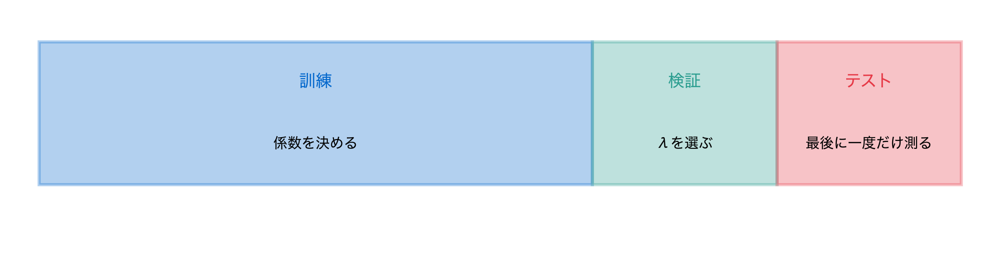
選ぶための行（検証）と、最後に測る行（テスト）を分ける。テストは最後に一度だけ開ける。
1組を測る側に回す
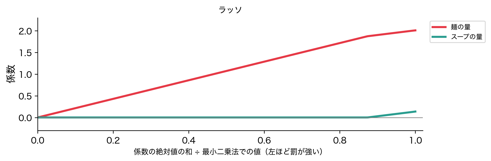
検証の行を1回だけ取り分けると、どの行を取り分けたかで数字が揺れる。そこで行を5組に分け、1組（橙）で測り、残り（青）で係数を決める。
どの組も1度ずつ測る
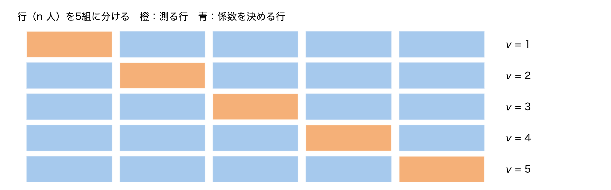
測る組を順に替え、5回当てはめる。どの行もちょうど1度だけ測る側に回る。その行を見ていない係数で。
交差検証の式
\begin{aligned} \hat{\boldsymbol\beta}_\lambda^{(-v)}&=(\mathbf X_{(-v)}^\top\mathbf X_{(-v)}+\lambda\mathbf I)^{-1}\mathbf X_{(-v)}^\top\boldsymbol y_{(-v)}, \\ \mathrm{CV}(\lambda)&=\frac1n\sum_{v=1}^{V}\bigl\lVert\boldsymbol y_v-\mathbf X_v\hat{\boldsymbol\beta}_\lambda^{(-v)}\bigr\rVert_2^2 \end{aligned}
(-v) は第 v 組を除いた行。これを交差検証（クロスバリデーション、CV）と呼ぶ。V 組に分けるものを V 分割交差検証（k-fold CV）、V=5 なら5分割CV（5-fold CV）という。
CVはU字をなぞる

\lambda の候補ごとにCVの誤差を計算する（緑）。1回ぶんのデータだけで、U字の底の位置をほぼ当てる（点線が選んだ所）。
CVの予測でR²も測れる
R^2_{\mathrm{CV}}=1-\frac{\sum_{i}\bigl(y_i-\hat y_i^{\,\mathrm{CV}}\bigr)^2}{\sum_i(y_i-\bar y)^2}
\hat y_i^{\,\mathrm{CV}} は、行 i を測る側に回した回の予測。n 人全員の予測が1つずつそろうので、第1回の R^2 と同じ形で測れる。
Vの選び方①：Vが小さいと
- 係数を決める行が n(V-1)/V 人に減る
- その係数は全員で決めた係数より当てはまりが悪い
- 誤差を大きめに見積もる（悲観的）
Vの選び方②：V＝nとV＝5, 10
- V=n（一つ抜きCV、LOO）：偏りは小さいが、当てはめが n 回。係数を決める行がほぼ同じなので、見積もりの揺れは小さくならない
- ふつうは V ＝5か10
- 分け方の乱数でも値は揺れるが、V 組の平均をとるぶん小さい
次の問い：LOOをn回せずに
- LOOは偏りが小さいが、当てはめが n 回要る
- リッジ回帰の予測は \hat{\boldsymbol y}=\mathbf H_\lambda\boldsymbol y。\mathbf H_\lambda は \boldsymbol y によらない
この形を使えば、1回の当てはめでLOOの誤差が出せないか？
LOOは1回の当てはめで
y_i-\hat y_i^{(-i)}=\frac{y_i-\hat y_i}{1-h_{ii}},\qquad h_{ii}=[\mathbf H_\lambda]_{ii}
抜いて当てはめ直した残差 ＝ 全員の残差 ÷（1 − てこ比）。n 回ぶんが1回で出る。
導出①：抜いた予測で置きかえる
- 行 i を抜いて決めた係数による行 i の予測を \hat y_i^{(-i)} とする
- y_i だけを \hat y_i^{(-i)} に置きかえて全員で当てはめても、答えは抜いたときと同じ
- 置きかえた行の誤差がちょうど0になり、残りの行の目的関数は抜いたときと同じだから
導出②：当てはめは線形変換
\begin{aligned} \hat y_i^{(-i)}&=\textstyle\sum_{i'\ne i}h_{ii'}y_{i'}+h_{ii}\hat y_i^{(-i)}\quad(\text{置きかえたデータ})\\ \hat y_i&=\textstyle\sum_{i'\ne i}h_{ii'}y_{i'}+h_{ii}y_i\quad(\text{元のデータ}) \end{aligned}
どちらも \mathbf H_\lambda を掛けるだけ。違うのは第 i 成分の y だけ。
導出③：引いて整理する
\begin{aligned} &\hat y_i-\hat y_i^{(-i)}=h_{ii}\bigl(y_i-\hat y_i^{(-i)}\bigr)\\ \Longrightarrow\quad&y_i-\hat y_i^{(-i)}=\frac{y_i-\hat y_i}{1-h_{ii}} \end{aligned}
2行目は、両辺から y_i を引いて整理したもの。てこ比の大きい行ほど、抜いたときの外れが大きい。
アルゴリズム：λの選び方
- \lambda の候補 \lambda_1<\dots<\lambda_L を並べる
- V分割：各 v で、\mathbf X_{(-v)} の平均・標準偏差で両方を標準化して \mathbf Z_{(-v)},\mathbf Z_v → (\mathbf Z_{(-v)}^\top\mathbf Z_{(-v)}+\lambda\mathbf I)\boldsymbol\beta=\mathbf Z_{(-v)}^\top(\boldsymbol y_{(-v)}-\bar y_{(-v)}\mathbf 1) を解く → \mathbf Z_v で誤差。\mathrm{CV}(\lambda) を \lambda ごとに
- リッジならLOO：全員で \mathbf H_\lambda=\mathbf Z(\mathbf Z^\top\mathbf Z+\lambda\mathbf I)^{-1}\mathbf Z^\top と残差 \boldsymbol e を作り、\mathrm{PRESS}(\lambda)=\sum_i\bigl(e_i/(1-h_{ii})\bigr)^2
- 誤差が最小の \lambda を選び、全員で当てはめ直す（ラッソは閉じた式が無いのでV分割で選ぶ）
第II部 実データ解析
第II部：実データで試す
- 第I部の人工データは、現象がはっきり出るように作った
- 実データは、理論どおりにいくとは限らない
- 外れたら、その理由を第I部の道具で考える
うまくいったら最高。
理論の予想
- 第I部：罰を足すと、揺れが減り、偏りが入る。誤差はU字を描く
- 予想：似た2列の係数は、リッジで近づき、ラッソで片方が0になるはず
- 予想：U字の底の罰を選べば、最小二乗法より予測が良くなるはず
データ：前立腺がんのデータ
| 行 | 前立腺の摘出手術を受けた患者 97 人（Stameyら1989） |
| 説明変数 | がんの体積・前立腺の重さ・年齢・前立腺肥大・精嚢への浸潤・被膜への浸潤・グリーソンスコア・4・5の割合（計8）。標準化してから罰する |
| 目的変数 | PSAの値の対数（中心化して切片を切り離す） |
悪性度を測る似た2列、グリーソンスコアと4・5の割合（相関 0.75）を追う。
第3回の道具で見る
| VIF | |
|---|---|
| 最大（被膜への浸潤） | 3.1 |
| グリーソンスコア | 2.5 |
| 4・5の割合 | 3.0 |
VIFは大きくない。それでも97人では、係数の揺れが係数そのものと同じくらいある（場面②）。
手続き：何をどう計算したか
- データ行列：8列を標準化して \mathbf Z、PSAの対数を中心化（交差検証（クロスバリデーション、CV）では、分けるたびに係数を決める側の行で標準化）
- リッジ回帰：\lambda の候補 151 個ごとに (\mathbf Z^\top\mathbf Z+\lambda\mathbf I)\boldsymbol\beta=\mathbf Z^\top\boldsymbol y を解く
- ラッソ：scikit-learnのLasso（座標降下法）で、罰の候補ごとに解く
- 罰の強さを選ぶ：5分割CV（5-fold CV）の誤差が最小のもの。リッジはLOOの閉形式でも
- 予測を比べる：最小二乗法・リッジ回帰・ラッソのCVの R^2
結果①：リッジで2列が近づく
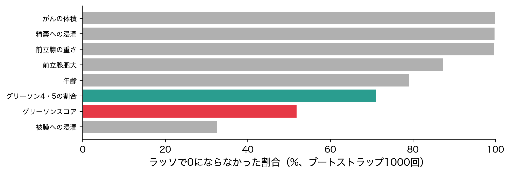
右端が最小二乗法。罰を強めると（左へ）、グリーソンスコアと4・5の割合が近づき、やがてそろう。予想どおり。
結果①：ラッソで片方が0に
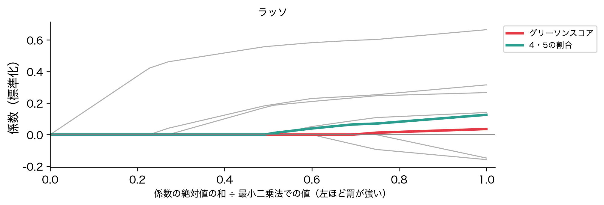
最初に0になるのは被膜への浸潤、次にグリーソンスコア。4・5の割合は残る。予想どおり。
結果②：罰の強さとCVの誤差
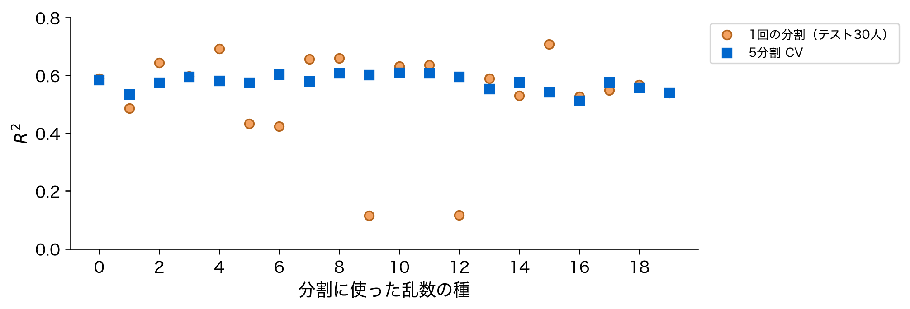
リッジ回帰の5分割CVの誤差（青）とLOOの閉形式（橙）。罰を強めると（左へ）上がり、右端の近くは平ら。
結果②：ラッソも底が平ら
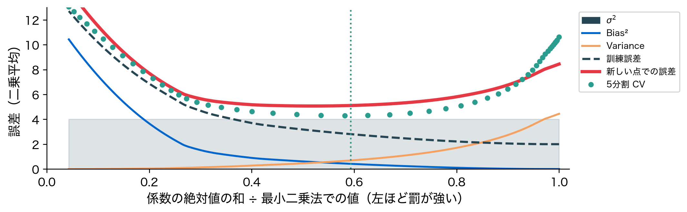
ラッソも同じ形。最小の所（赤）は、右端の最小二乗法のすぐ近くにある。
結果②：選ばれた罰は弱い

破線がCVで選んだ強さ。リッジの有効自由度は 7.41 で、8からあまり減らない。
結果②：予測は良くならない
| 最小二乗法 | リッジ回帰 | ラッソ | |
|---|---|---|---|
| CVの R^2 | 0.584 | 0.586 | 0.588 |
予想は外れた。底の罰を選んでも、予測はほとんど良くならない。なぜか。
なぜ良くならなかったか
| 行 | 係数の数 | 係数1個あたり | 罰で下がった誤差 | |
|---|---|---|---|---|
| 第I部の人工データ | 40 | 20 | 2行 | 8.45 → 5.07（40%減） |
| 前立腺がんのデータ | 97 | 9 | 約11人 | 0.549 → 0.546（0.5%減） |
罰で減らせるのは揺れ（Variance）だけ。1個の係数を約 11 人で決めていて、最小二乗法の揺れがもともと小さい。
揺れの減り方も小さい
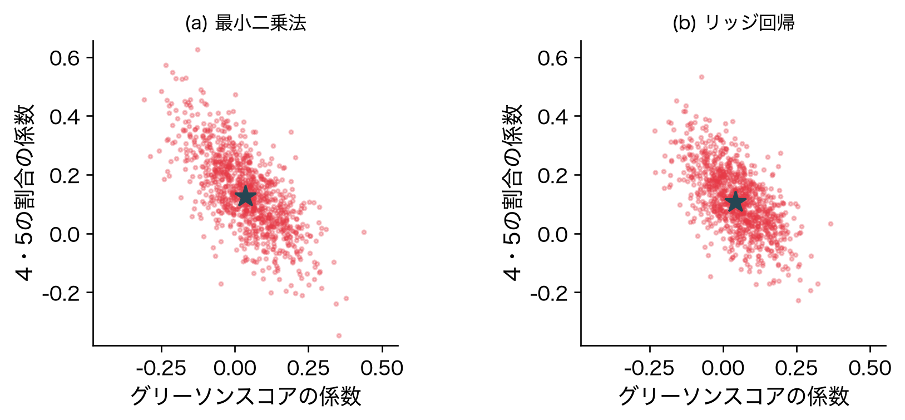
場面③と同じ1000回。4・5の割合の係数の揺れ（標準偏差）は 0.132 → 0.109。
それでも内訳は変わる
| 変数 | 最小二乗法 | リッジ（λ = 3.8） | ラッソ（λ = 6.7） |
|---|---|---|---|
| がんの体積 | 0.665 | 0.615 | 0.598 |
| 精嚢への浸潤 | 0.315 | 0.297 | 0.245 |
| 前立腺の重さ | 0.266 | 0.263 | 0.235 |
| 年齢 | -0.158 | -0.138 | -0.065 |
| 被膜への浸潤 | -0.148 | -0.092 | 0 |
| 前立腺肥大 | 0.140 | 0.131 | 0.091 |
| グリーソン4・5の割合 | 0.126 | 0.107 | 0.065 |
| グリーソンスコア | 0.036 | 0.042 | 0.002 |
ラッソは被膜への浸潤を0にし、グリーソンスコアもほぼ0にした。罰が効くのは、データがよく決められない係数。
理論の予想②：分け方を変えると
- 第I部：CVでは、全員が1度ずつ測る側に回る
- 予想：テストの行を1回だけ取り分けるより、数字の揺れは小さいはず
結果③：1回の分割の揺れ
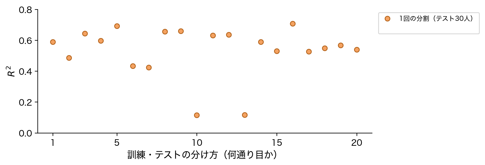
8変数の最小二乗法を、30人をテストに取り分けて測る。乱数だけ変えると 0.11〜0.71（標準偏差 0.159）。
結果③：CVの揺れは小さい
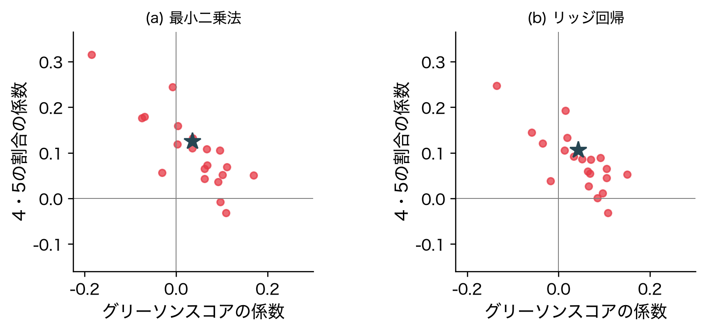
同じ20通りの乱数で5分割CVの R^2。標準偏差 0.027、約 6 分の1。予想どおり。
結果③：選ばれるλは揺れる
- 同じ20通りの分け方で、リッジ回帰の \lambda を選び直す
- 選ばれる \lambda は 0.45 から 18.3 まで動く
CVの誤差の底が平らなので（結果②）、底の位置が分け方で動く。
確認：LOOの閉形式
| λ | 閉形式 PRESS/N（1回の当てはめ） | 97回の当てはめ直し |
|---|---|---|
| 0.0 | 0.5413 | 0.5413 |
| 3.8 | 0.5368 | 0.5368 |
| 30.0 | 0.5569 | 0.5569 |
| 300.0 | 0.8067 | 0.8067 |
全員の残差とてこ比から求めた値が、1行ずつ抜いて 97 回当てはめ直した値と一致する。
確認：tr Hを数える
| λ | tr H（切片を含む） | tr H_λ（8列の分） |
|---|---|---|
| 0.0 | 9.00 | 8.00 |
| 3.8 | 8.41 | 7.41 |
| 10.0 | 7.67 | 6.67 |
| 100.0 | 4.21 | 3.21 |
| 1000.0 | 1.65 | 0.65 |
| 10000.0 | 1.08 | 0.08 |
\lambda=0 で 9（切片＋8列）＝第3回の p。罰を強めると下がっていく。
落とし穴①：標準化を忘れる
- 元の単位のままの8列にラッソを当てる
- 罰の強さは、4列だけが残るように調整する
- 標準化してから同じことをした結果と比べる
落とし穴①：残る列が入れ替わる
| 残った4列 | |
|---|---|
| 標準化してから | がんの体積、前立腺の重さ、精嚢への浸潤、グリーソン4・5の割合 |
| 元の単位のまま | がんの体積、年齢、前立腺肥大、グリーソン4・5の割合 |
元の単位のままでは前立腺の重さ、精嚢への浸潤が落ち、年齢、前立腺肥大が残る。標準偏差の小さい列（前立腺の重さ 0.43、精嚢への浸潤 0.41）ほど係数が大きく、罰を多く払う。
落とし穴②：残った列を信じる
- 全員で当てはめたラッソは、グリーソンスコアをほぼ0にし、4・5の割合を残した
- 場面と同じ1000回のブートストラップで、交差検証（クロスバリデーション、CV）で選んだ強さのラッソを当てはめ直す
- 列ごとに、0にならなかった回の割合を数える
落とし穴②：取り直すと入れ替わる

グリーソンスコアだけが残る回が 21%、4・5の割合だけが 40%、両方が 31%。
このデータでわかったこと
- 予想どおり：似た2列の係数は、リッジで近づき、ラッソで片方が0になった
- 予想は外れた：罰は予測をほとんど良くしない（係数1個あたり約 11 人）
- 予想どおり：CVの揺れは、1回の分割の約 6 分の1
- ラッソが残す列と選ばれる \lambda は、取り直しや分け方でなお揺れる
締め
まとめ①：罰を足して1つを選ぶ

\mathbf X^\top\mathbf X+\lambda\mathbf I は必ず逆行列を持つ。線だった谷底が1点に決まる。
まとめ②：縮めるか、0にするか
リッジ回帰は比で縮め、ラッソは差で縮めて小さい係数を0にする。罰の前に標準化する。

まとめ③：U字の底をCVで探す
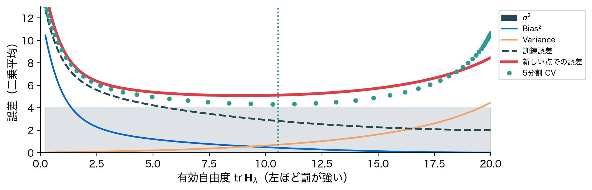
揺れが減り、偏りが入る。その釣り合いの底を、交差検証（クロスバリデーション、CV）で探す。効き具合は \operatorname{tr}\mathbf H_\lambda で数える。
演習では：車庫の2列が近づく
- 演習7（エイムズ住宅、標準化してからRidge）：車庫の台数と面積の係数は、α＝1で1,477と2,031、α＝1000で3,601と3,994
- 相関0.88の2列（演習6）に、効き目を等しく分ける方へ動く
演習では：2階の面積が0になる
- 演習7：居住面積 ＝ 1階 ＋ 2階 ＋ 仕上げの低い部分 がぴったり成り立つ（第3回）
- Lassoは2階の面積を0にし、足すとほかの列になる組から1本を外す
次回予告①：yが0/1なら

ここまで y は連続の量だった。病気か否かのように、y が0か1しか取らないこともある。
次回予告②：同じ直線を当てる
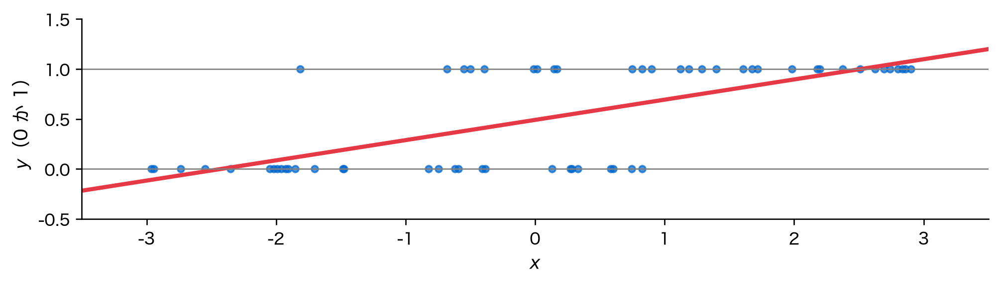
\hat{\boldsymbol\beta}=(\mathbf X^\top\mathbf X)^{-1}\mathbf X^\top\boldsymbol y,\qquad y_i\in\{0,1\}
問い：0/1の y に最小二乗法を当てると、何が起きるか？